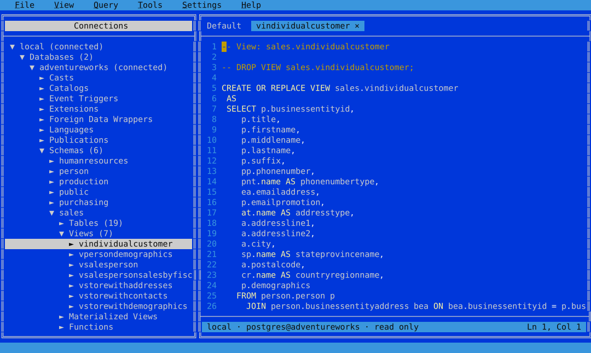
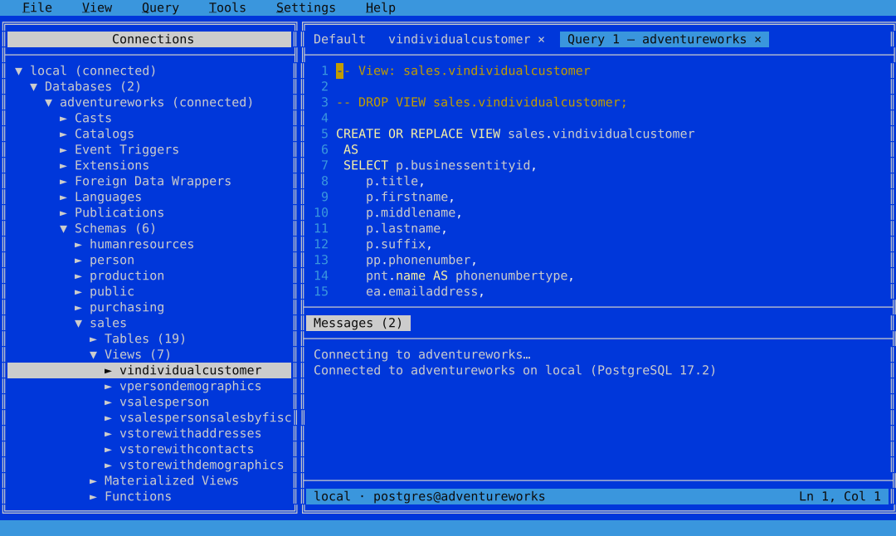

Object view (definitions)
For every object in the tree, pgtc shows its DDL, reconstructed from the system catalogs and the
server's pg_get_*def functions — the equivalent of pgAdmin's SQL tab. The text is read only; it
is also the starting point for changing the object.

sales.customer in the Default tab.The Default tab follows the tree
The Default tab shows the definition of the row under the tree cursor. The definition is one catalog query with the object's OID as bind parameter, sent when the cursor has rested on the row for 200 ms; until the result arrives the tab says loading…. A result for a row the cursor has already left is discarded.
The tab status row names the connection, role and database, and that the text is read only:
local · postgres@adventureworks · read only.
What a definition contains
Every kind of object uses the same layout, which follows pgAdmin:
-- Table: sales.customer what it is
-- DROP TABLE IF EXISTS sales.customer; how to drop it (as a comment)
CREATE TABLE IF NOT EXISTS sales.customer how to create it
(
customerid integer NOT NULL DEFAULT nextval('sales.customer_customerid_seq'::regclass),
personid integer,
storeid integer,
territoryid integer,
rowguid uuid NOT NULL DEFAULT uuid_generate_v1(),
modifieddate timestamp without time zone NOT NULL DEFAULT now(),
CONSTRAINT "PK_Customer_CustomerID" PRIMARY KEY (customerid),
CONSTRAINT "FK_Customer_Person_PersonID" FOREIGN KEY (personid) REFERENCES person.person(businessentityid),
...
)
TABLESPACE pg_default;
ALTER TABLE IF EXISTS sales.customer its owner
OWNER to postgres;
COMMENT ON TABLE sales.customer comments
IS 'Current customer information. Also see the Person and Store tables.';
COMMENT ON COLUMN sales.customer.customerid
IS 'Primary key.';
GRANT SELECT ON TABLE sales.customer TO reporting; privileges
-- Index: ix_customer_territoryid the things that belong to it
CREATE INDEX IF NOT EXISTS ix_customer_territoryid
ON sales.customer USING btree (territoryid);| Object | Its definition also includes |
|---|---|
| Table, partition | Columns with defaults, identity and generated expressions; all constraints; the partition key (PARTITION BY); then its indexes, triggers, rules and row-level security policies. |
| View | Its rules and triggers. |
| Materialized view | Its indexes. |
| Function, procedure | The complete CREATE OR REPLACE FUNCTION … / PROCEDURE … with its body. |
| Column, constraint, index, trigger, rule, policy | The statement that adds just that part. |
| Sequence, type, domain, schema, extension, role, database, tablespace, … | Its CREATE statement with owner, comment and privileges where they apply. |
Wherever PostgreSQL has a function that deparses an object, the text is the server's own output, so it is exact on every server version:
| Part | Source |
|---|---|
| View and materialized view query | pg_get_viewdef() |
| Function, procedure, trigger function | pg_get_functiondef() |
| Index | pg_get_indexdef() |
| Constraint (table and domain) | pg_get_constraintdef() |
| Trigger | pg_get_triggerdef() |
| Rule | pg_get_ruledef() |
| Partition key | pg_get_partkeydef() |
| Column defaults and other stored expressions | pg_get_expr() |
| Type names | format_type() |
| Comments | obj_description(), col_description() |
| Privileges | The object's ACL, expanded with aclexplode() into GRANT statements. |
The rest — CREATE TABLE, CREATE SEQUENCE, CREATE TYPE, roles, databases,
schemas — is assembled by pgtc from the catalog columns. Names are schema-qualified and quoted with
quote_ident().
Rows that are not objects
- A group (Tables, Columns, …) lists its objects.
- A server shows its connection parameters, state, server version and
pg_settings— see Connections.
Reading a definition
Press F6 (or Alt+2) to move from the tree into the text. The view is the editor of a query tab in read-only mode: moving, selecting, copying and searching work; editing keys are ignored, with a hint in the status line.
| Key | What it does |
|---|---|
| Arrows, PgUp / PgDn | Move and scroll. |
| Ctrl+Home / Ctrl+End | Start / end of the definition. |
| Ctrl+F, then F3 / Shift+F3 | Find text; next / previous match. |
| Shift + arrows, Ctrl+A | Select; select all. |
| Ctrl+C or Ctrl+Insert | Copy the selection. |
| Ctrl+E | Edit the definition in a new query tab. |
| F6 | Back to the tree. |
Long lines are not wrapped; the view scrolls horizontally with the arrow keys or End.
Keeping a definition open: F3

vindividualcustomer: it now has its own tab next to
Default.The Default tab changes with every step in the tree. To keep a definition — to compare two tables, or to read a function while writing a query — press F3 in the tree: the selected object opens in its own tab, named after it. Any number can be open; switch between them with Alt+Left / Alt+Right and close one with Ctrl+W.
An object tab is a snapshot: it shows the definition as read when the tab was opened and does not follow later DDL.
Changing an object: Edit in new query tab (Ctrl+E)
pgtc has no property dialogs that generate ALTER statements. Objects are changed with DDL in a
query tab, which can be reviewed before it is executed.
- Select the object in the tree and wait for its definition (or go to its object tab).
- Press Ctrl+E — or , or the context menu.
- A new query tab opens with the whole definition as its text and a session on the object's database.
- Change the text and execute it with F5.

Whether the text can be executed as it is depends on the kind of object:
| Object | What to do in the query tab |
|---|---|
| Function, procedure, view | The definition is CREATE OR REPLACE …: change it and execute it. The usual limits of CREATE OR REPLACE apply — a changed result type of a function, or removed or retyped columns of a view, need a DROP first. |
| Table | The definition is CREATE TABLE IF NOT EXISTS …, a no-op on an existing table. Use it as the reference for writing ALTER TABLE statements, or as the start of a similar table. |
| Index, trigger, constraint, policy | Uncomment the DROP line to drop and re-create the object. |
The text in the new tab counts as unsaved text: closing the tab asks whether to save it to a file.
Ctrl+E is refused, with a hint in the status line:
- while the definition is still loading, and on rows without a definition (groups, errors);
- on roles and tablespaces — they are cluster-wide objects, so there is no database to open the tab's session on;
- on a server that is not connected.
For CREATE and DROP statements, the
developer templates (F7 in a query tab) generate the statement from a form —
for example Drop table with the table selected in the tree already filled in.